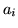
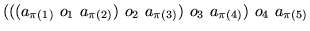
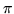
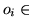

Problem I
23 Out of 5
Input: standard input
Output: standard
output
Time Limit: 1 second
Memory Limit: 32 MB
Your task is to write
a program that can decide whether you can find an arithmetic expression consisting
of five given numbers (1<=i<=5) that will yield
the value 23.
For this problem we will only consider arithmetic expressions of the following
from:
 where : {1,2,3,4,5} -> {1,2,3,4,5} is a bijective functionand  {+,-,*} (1<=i<=4)
The Input consists of 5-Tupels
of positive Integers, each between 1 and 50.
Input is terminated by a line containing five zero's. This line should not be
processed. Input file will have no more than 25 lines.
For each 5-Tupel print
"Possible" (without quotes) if their exists an arithmetic expression
(as described above) that yields 23. Otherwise print "Impossible".
1 1 1 1 11 2 3 4 52 3 5 7 110 0 0 0 0
ImpossiblePossiblePossible
Thomas Strohmann